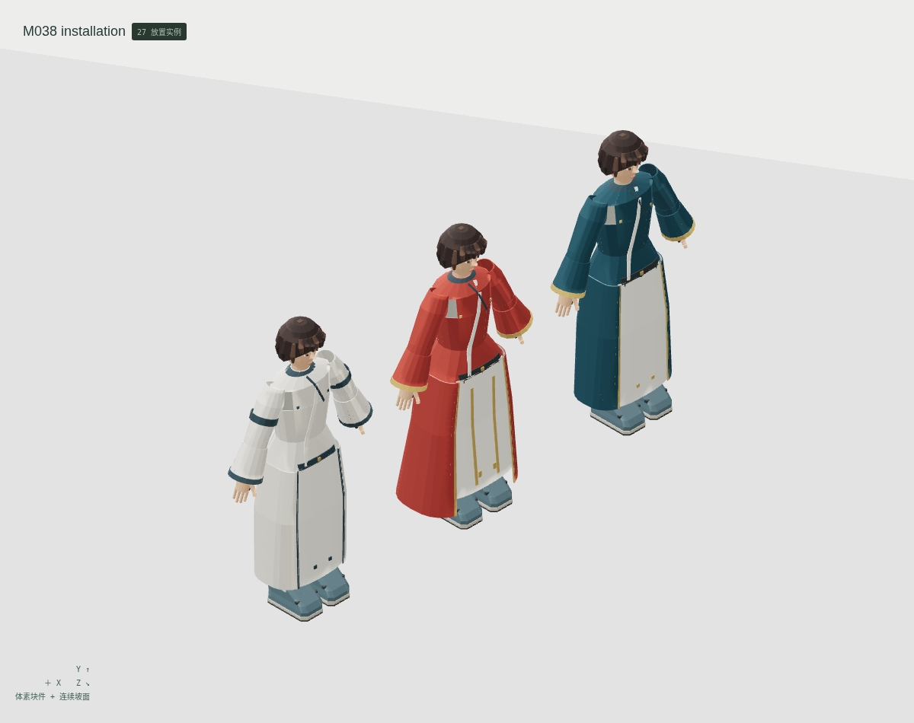
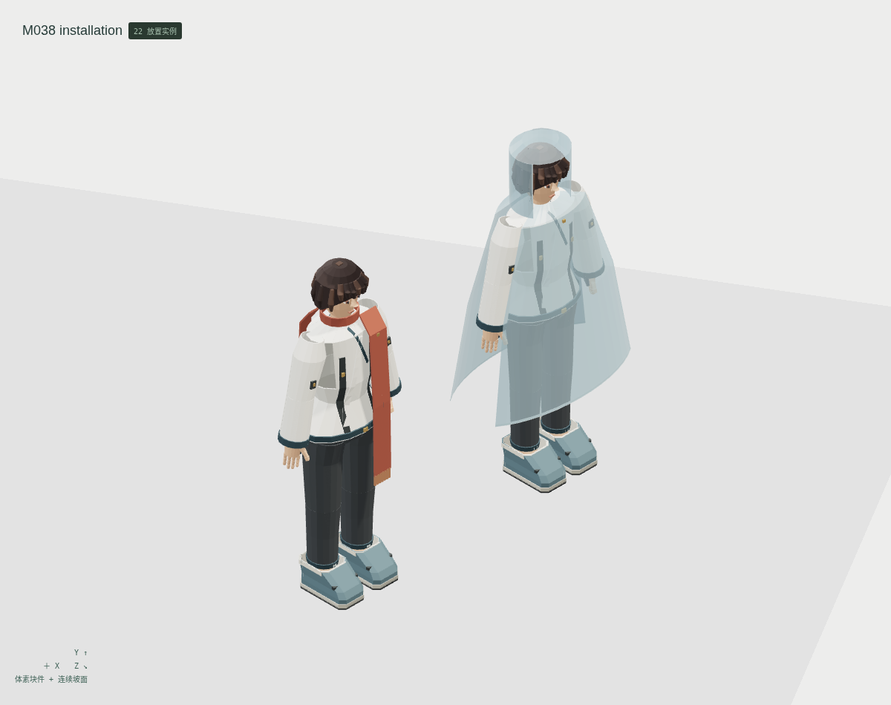
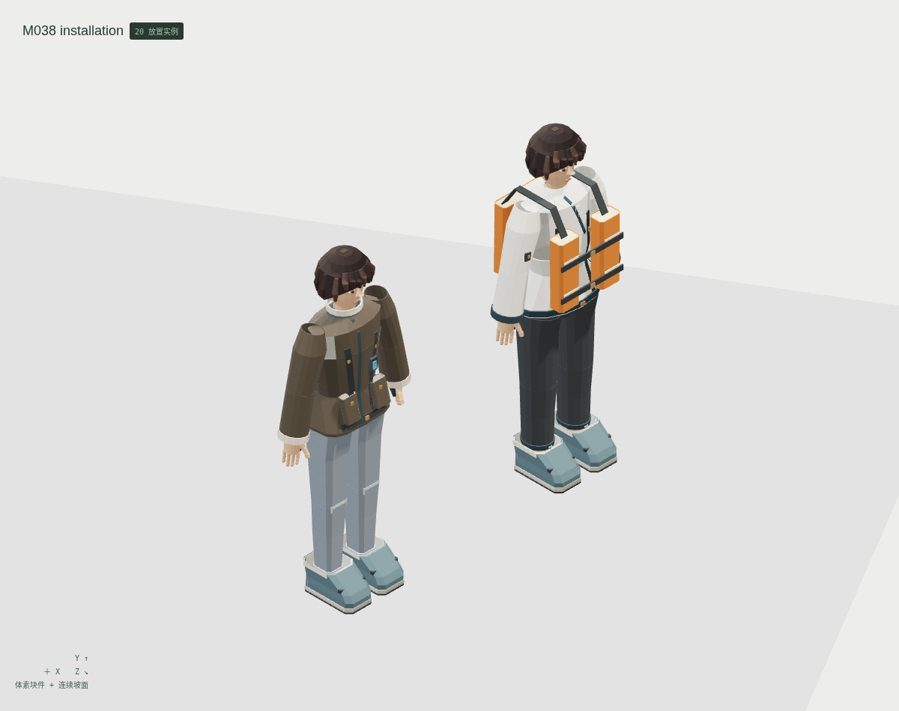
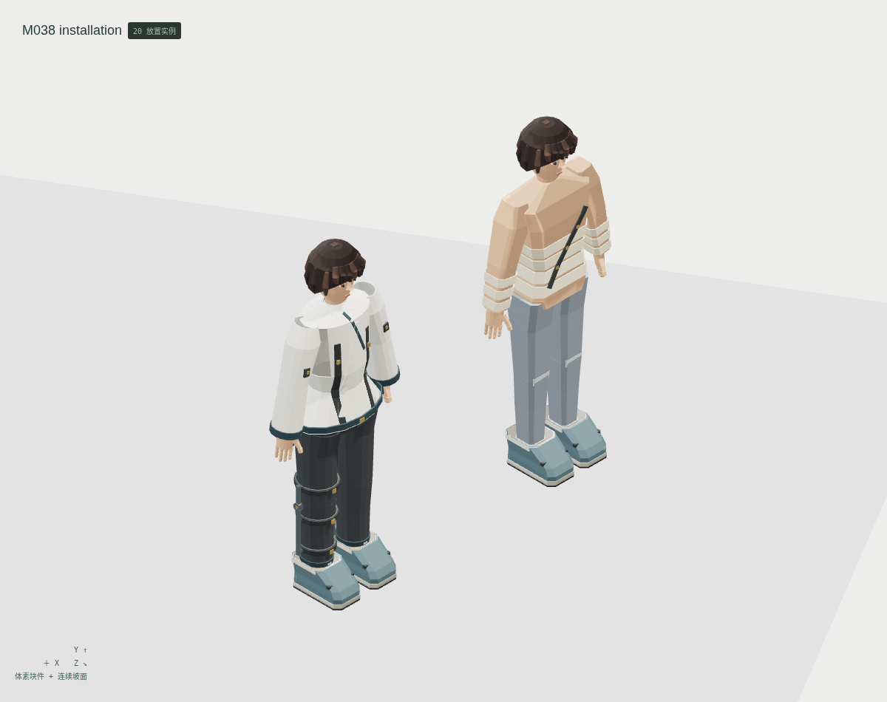
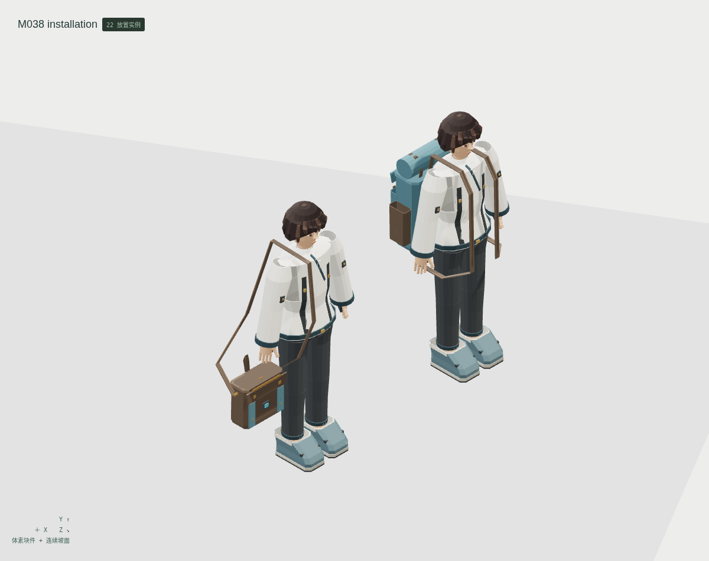
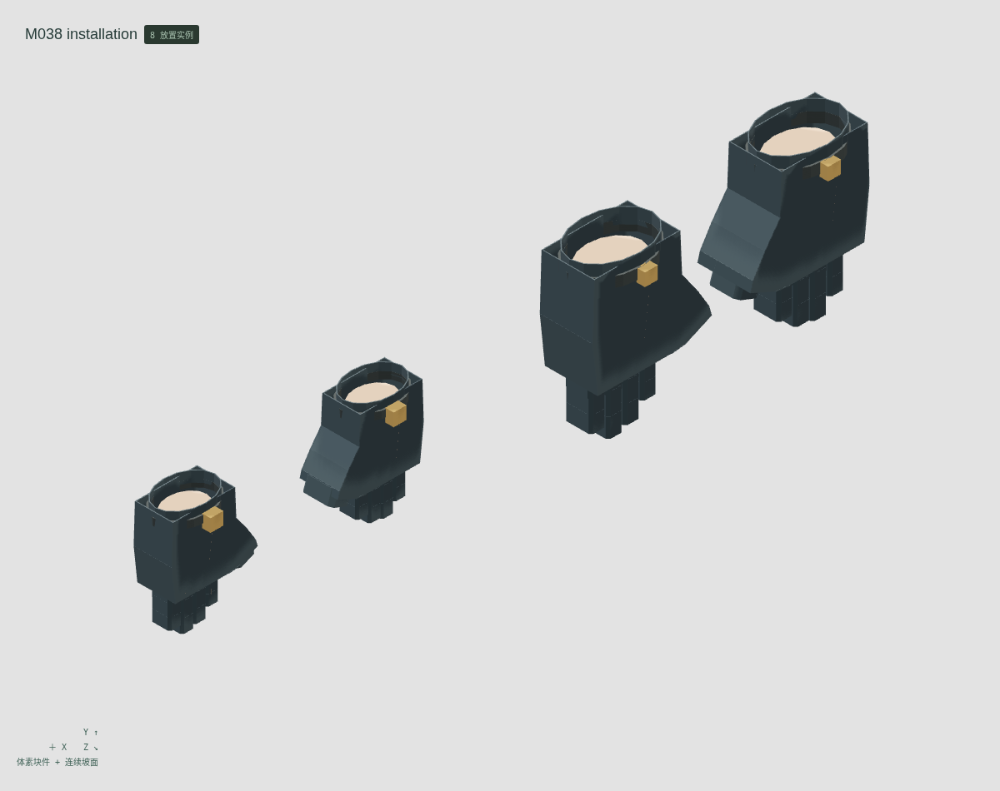
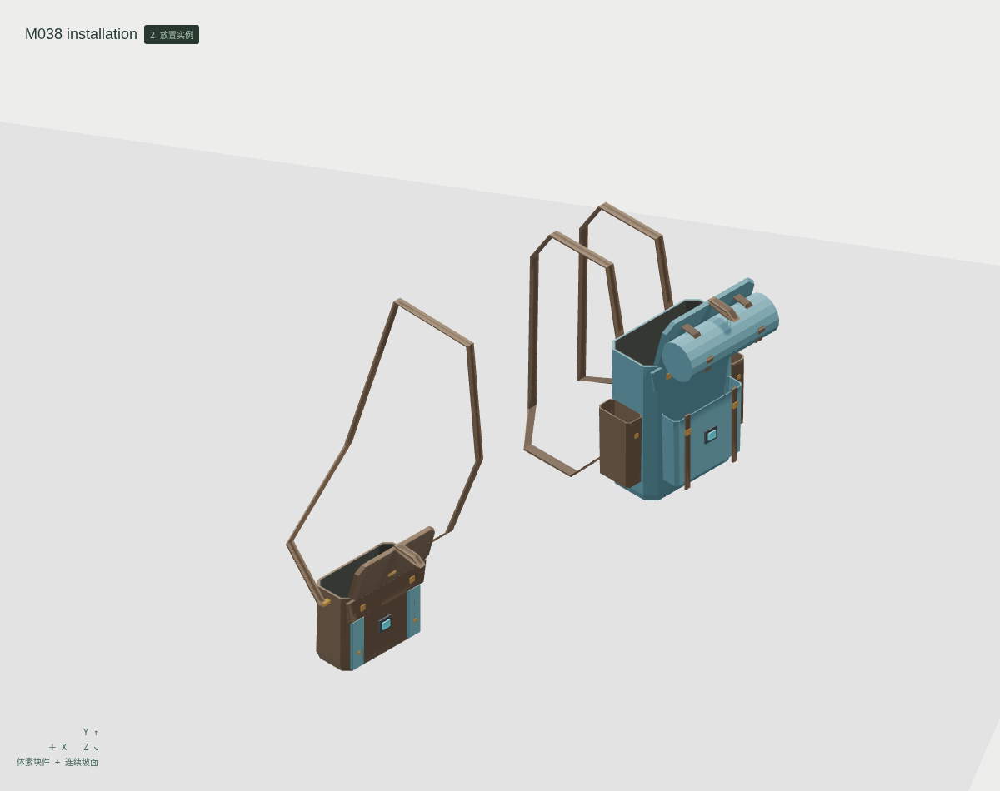

<!doctype html><meta charset="utf-8"><style>*{box-sizing:border-box}body{margin:0;background:#e2e4df;color:#263c34;font:20px system-ui}header,footer{padding:26px 34px}h1{margin:0 0 12px;font-size:32px}main{display:grid;grid-template-columns:1fr 1fr}figure{margin:0;border:1px solid #bec5bd;background:#eceeea}img{display:block;width:100%}figcaption{padding:14px 24px}figure:last-child{grid-column:1/3;margin:0 25%}</style><header><h1>云山 M038 · 礼服、雨披、护具与背包</h1>12 个独立母版 · 24 种形态 · 7 组真实编辑器装配<br>最小细节体素；衣面、斜带、曲面与空腔使用连续网格</header><main><figure><figcaption>官署礼常服 / 婚礼礼服 / 丧礼素服</figcaption></figure><figure><figcaption>透明雨披 / 围巾披肩</figcaption></figure><figure><figcaption>独立救生穿戴 / 飞行皮衣护具</figcaption></figure><figure><figcaption>同源皮肤派生配绷带 / 右腿支具</figcaption></figure><figure><figcaption>成人 A 闭合背包与挎包穿戴</figcaption></figure><figure><figcaption>成人 / 学龄儿童 · 双侧真腔手套</figcaption></figure><figure><figcaption>离身开盖 · 实际前铰轴与内腔</figcaption></figure></main><footer>身体、头发、手足和内搭来自另存的既有母版，不重复计数。身体站姿、张手手套；闭合包仅成人 A 穿戴，开盖离身。逐组件刚性绑定，不含软布、IK 或原游戏控制器。技术候选，人工美术验收 0。</footer>